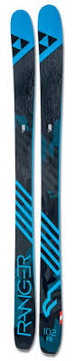
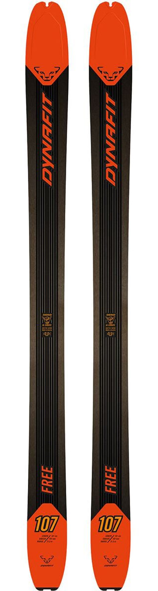
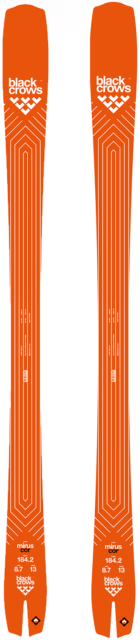

All Mountain

Fischer Ranger 102 FR:
Oh boy, oh boy. So much
can be said about this ski. Truly a 'swiss-army knife' of a ski, the
Rangers can do it all. For someone that wants to push the front
of their boot and dig into some groomers, this ski is choice. For
someone who wants to do sidecountry exploring and hit some drops, this
ski is choice. For someone who likes to get rowdy in the bumps and maybe get a
a little bit loose, this ski is choice. 102mm underfoot is definitely
a bit wide for the east coast, but the aggressive shape still bites into the
ice and the width will be well welcomed when we get our occasional powder day.
For those who might not be as aggressive of a skier but are still interested,
check out the newer models of the Fischer Ranger. There are a wide variety of different
widths and constructions that might better fit your skiing style. Tried and true, these skis
kick ass (they also come in pink!).
Touring

Dynafit 107 Free: If you want a light
pair of touring skis that will let you float your way to the
on top of those deep powder days, these skis are for you. The biggest
the perk of these skis is their integrated "skin attachment system". With a
notch in the tip of the ski, you can reach forward during transitions and rip
your skins off without having to take your skis off. When the wind
is whipping and you haven't had anything to eat except a Maplefields
breakfast sandwich three hours ago, quick transitions = happy turns.
Beyond their convenient ski attachment and their weight, these skis also come in
at a decent price point of around $350 brand new. I definitely wouldn't take them
on any resort laps, but in the backcountry, these skis are mint!
Carving

Black Crow Mirus Cor:An ideal carving ski,
in my eyes, can lay over turns all day, while still being
able to do it all. While you could definitely go for a more aggressive
'pure' performance ski like a racetiger sl (or any other FIS Sl ski),
you simply won't get the same level of 'play' and energy that the Mirus Cor
brings to the table. With a 13m turn radius, the Mirus can only be
described as "whippy". The fatter shovel and swallow tail sidecut
allows it to be skied all over the mountain (in all conditions!). Keep these
skis sharp and you will be able to make turns like a racer while
still feeling comfortable enough to pop into the woods or bounce off a few side hits.
These boards are truly peak.